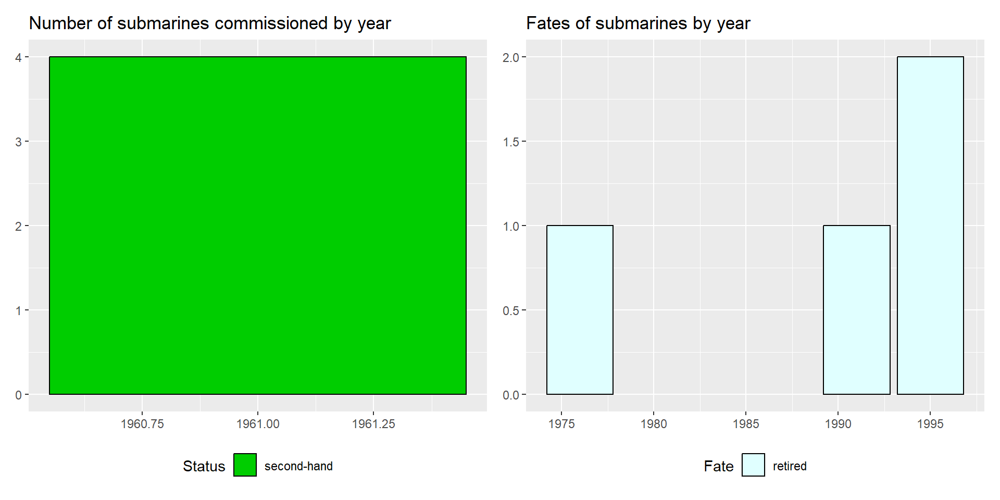
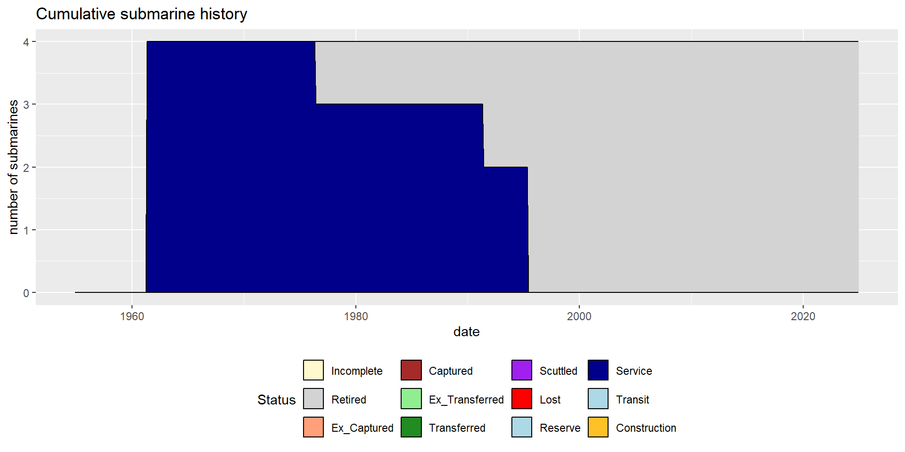
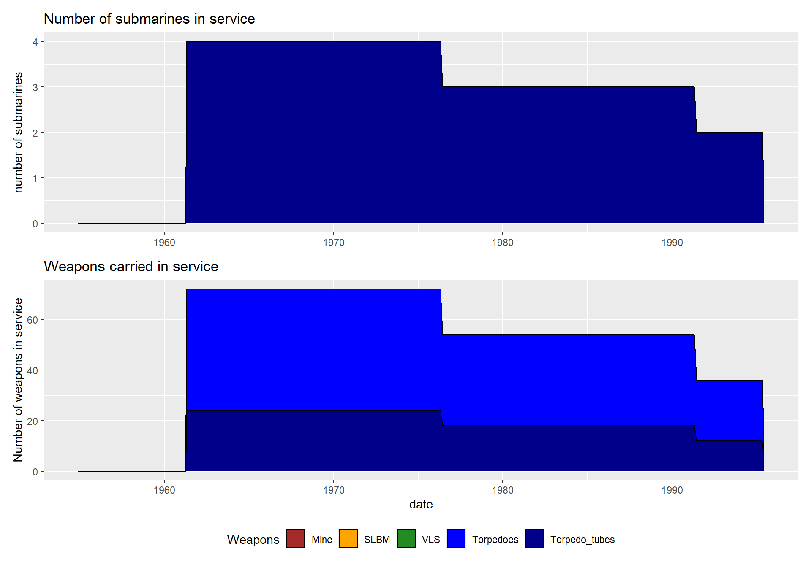
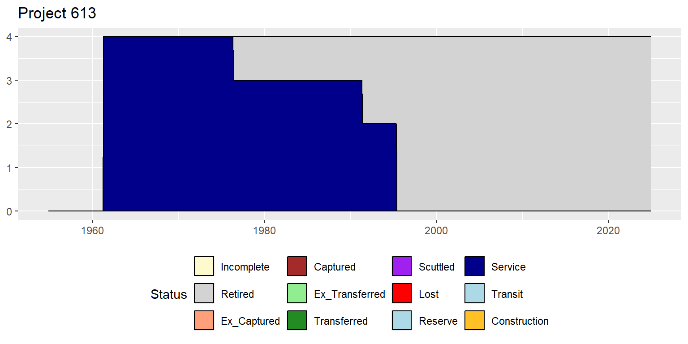
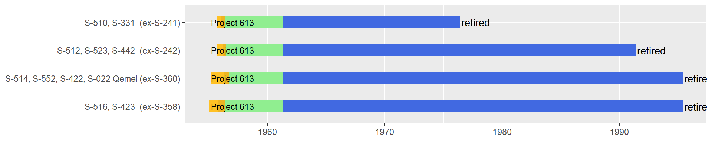

Albania
2024-11-18
Albania is a Small Mediterranean country in Southern Europe with 2.8 million inhabitants. Occupied by Italy during World War 2 it fell under Soviet influence after liberation. It was a founding member of the Warsaw pact, being a member from 1955. However, following a split with the Soviet Union it withheld support from the pact in 1961 and withdrew fully in 1968. It remained a single-party communist state however, but with closer ties to China until the end of the cold war.It has since democratized, and come into closer contact with Western powers. Albania joined NATO in 2009, and is a candidate for EU accession.
Prior to WW2, the Albanian navy only consisted of 6 small gunboats (4 newly built Italian and 2 ex-German FM minesweepers), promptly taken oven by the Italians during the occupation. Albania’s post-war navy followed its shifting ties with the major communist powers. Initially it relied exclusively on Soviet equipment before switching to Chines equipment. However, only under the Soviet phase did Albania acquire submarines, and only once. Throughout, the main focus was made on developing an extensive mosquito fleet of fast attack crafts (torpedo, missile, ASW, and gun) and inshore minesweepers. Since the end of the Communist era, the Albanian navy gradually vanished making way to a coast guard fleet of small patrol boats and crafts with no project of acquiring any type of combatant ships, including submarines.
As a whole, Albania has operated a total of 4 submarines, all of Soviet origin and obtained in the 1960s. These were retired quickly after the fall of communism with no replacement.
Submarines operated by Albania


Individual submarines by class
Wiskey class (Project 613)
Albania received four ex-Soviet project 613 boats before the split with the USSR. One retired soon after, whilst the rest soldiered on until the end of the cold war.
| Version | Boats | Number | Displacement | Propulsion | Power | Fuel | Speed | Range | Depth |
|---|---|---|---|---|---|---|---|---|---|
| Project 613 | all | 4 | 1045/1342t | diesel-electric | 4000/2700hp | NAt | 18.3/13.1kts | 8580/353nm | 170m |
| Version | Boats | Year | Torpedo_text |
|---|---|---|---|
| Project 613 | all | 1961 | 6x533mm (12 torp or 22 mines) |
/none/9156_514_20230119202246.png)

